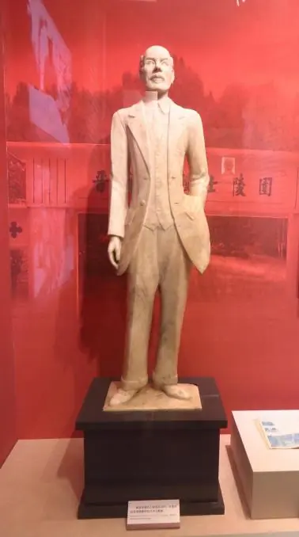
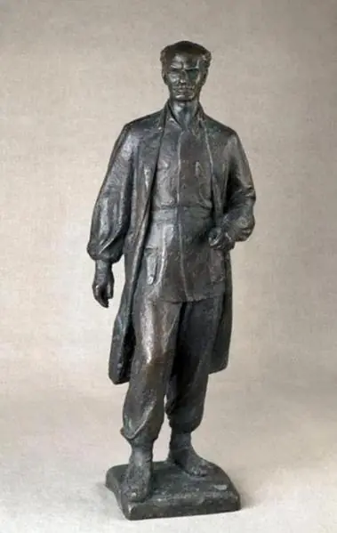
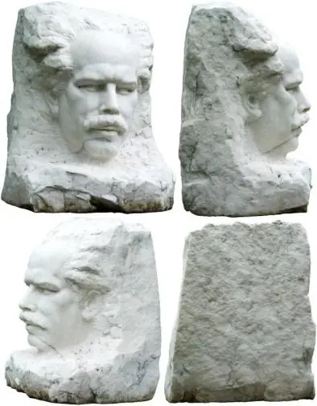
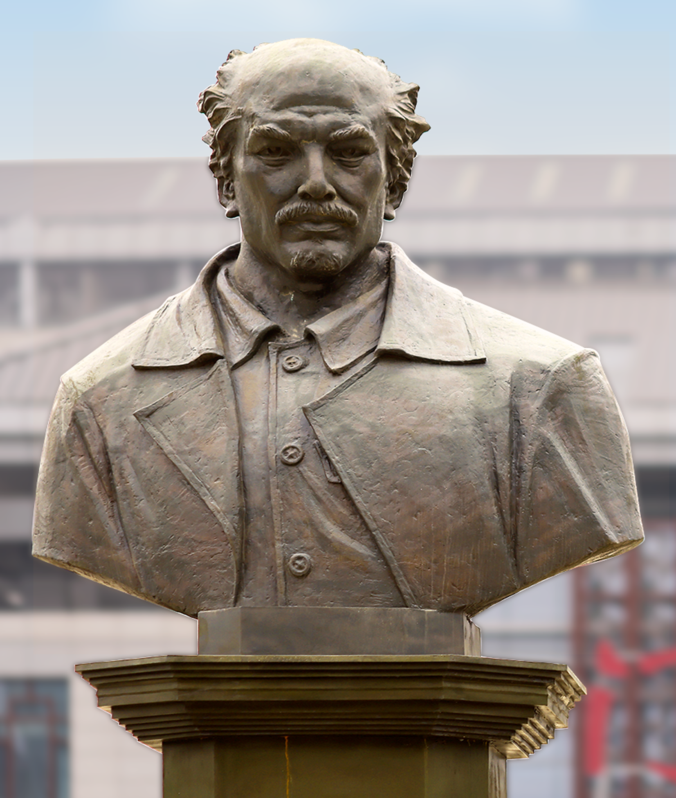

诺尔曼·白求恩
全球校友精神丰碑
白求恩，全名亨利·诺尔曼·白求恩（Henry Norman Bethune，1890年3月4日—1939年11月12日），加拿大共产党员，国际主义战士，著名胸外科医师。1938年来华，1939年因抢救伤员感染败血症牺牲。毛泽东称其“是一个高尚的人，一个纯粹的人，一个有道德的人，一个脱离了低级趣味的人，一个有益于人民的人”。
本馆为数字虚拟纪念馆，汇聚全球捐赠名录、雕像档案与文创工程。
探访全球雕像谱系🌏 全球传承谱系 · 白求恩纪念雕像
白求恩的精神跨越时空，世界各地的雕像见证了人们对他的永恒怀念。以下按时间顺序排列。

吉林大学 · 新雕像

石家庄华北军区烈士陵园 · 白求恩汉白玉雕像
高1.3米，汉白玉质地，由刘庭芳于1940年雕刻完成。1953年3月，雕像与白求恩灵柩一起迁到石家庄华北军区烈士陵园。2001年，雕像被鉴定为国家二级文物。

中国美术馆 · 白求恩全身像铜雕（司徒杰）
铜质，尺寸80cm×29cm×18cm。司徒杰创作，生动刻画白求恩形象，现收藏于中国美术馆。
中国医科大学 · 白求恩雕塑
1964年10月由第50期同学捐建。白求恩身穿白大衣，兜里装着听诊器，足蹬草鞋，脚缠腿绷。底座刻有“诺尔曼·白求恩”及“五十期毕业留念（1964.10）”。
吉林大学基础医学院 · 白求恩雕像（司徒杰）
高2.2米，站立式圆雕。雕像由司徒杰于1956年开始创作，历时3年完成，之后安放在石家庄白求恩国际和平医院院内。1976年国际和平医院将第一次创作的汉白玉白求恩雕像送给白求恩医科大学（现吉林大学）。

广东美术馆 · 白求恩石雕（潘鹤）
石质，尺寸60cm×45cm×50cm。著名雕塑家潘鹤创作，以凝练刀法表现白求恩的坚毅与奉献，现藏于广东美术馆。
加拿大格雷文赫斯特镇 · 白求恩铜像
2000年8月19日揭幕，铜像高约两米，白求恩身着八路军军服，右手拿着听诊器。加拿大总督阿德里安娜·克拉克森和中国驻加拿大大使梅平共同为铜像揭幕。

山西白求恩医院 · 白求恩铜像
2020年1月3日在山西白求恩医院揭幕，时任山西省委书记郭树生出席揭幕活动。铜像承载着对白求恩精神的崇高敬意，激励医务工作者全心全意为人民服务。
🤝 全球校友捐赠名录
总筹款目标：***** | 已募集 *****
| 捐赠方/校友组织 | 金额 (RMB) | 寄语 |
|---|---|---|
| 北美吉大校友总会 (多伦多分会) | *** | 铭记白求恩国际主义 |
| 加拿大白求恩医学发展基金会 | *** | 加中友谊永存 |
| 北京协和医学院吉大学子 | *** | 传承无私奉献 |
| 吉林省校友企业家联谊会 | *** | 鼎力新雕像工程 |
| 上海校友会医学分会 | *** | 致敬白求恩精神 |
| 澳大利亚吉大校友会 | *** | 南半球爱心汇聚 |
| 深圳校友会 · 白求恩专项基金 | *** | 支持汉白玉雕塑 |
| 李光耀医学基金 (匿名) | *** | 弘扬仁心仁术 |
| 吉林大学白求恩医学部79级全体 | *** | 永远怀念 |
| 美国加州校友会 | *** | 携手共铸丰碑 |
| 其他个人及团体 (1356笔) | *** | 涓滴成海 |
📖 白求恩精神 · 永放光芒
“一个人能力有大小，但只要有这点精神，就是一个高尚的人，一个纯粹的人，一个有道德的人，一个脱离了低级趣味的人，一个有益于人民的人。”
—— 毛泽东《纪念白求恩》 (1939年)
国际主义精神
毛泽东认为，纪念白求恩首先要学习他的国际主义精神。白求恩不远万里来到中国，把中国人民的解放事业当作自己的事业，体现了共产主义精神。
“毫不利己专门利人”的精神
白求恩对工作极端负责，对人民极端热忱。他拒绝特殊待遇，要求“当一挺机关枪使用”，被毛泽东赞为“真正共产主义者的精神”。
“对技术精益求精”的精神
白求恩在边区创办卫生学校、编写教材，培养了大批医护骨干。他说：“好技术可以更快地医好病人。”毛泽东指出这是对鄙薄技术工作者的极好教训。
🏛️ 虚拟数字馆
建设中 · 敬请期待
📅 雕像瞻仰预约
如需前往瞻仰白求恩雕像，请提前电话预约。
📞 130 **** 5678